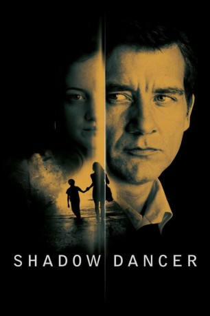

#5109 Shadow Dancer
 
 IMDB-Wertung: 6.2 / 10
IMDB-Wertung: 6.2 / 10  Metascore: 0
Metascore: 0 
Unerbittlich führt der radikale Arm der IRA seinen Krieg gegen Großbritannien. Mit zunehmend harten Bandagen wird gekämpft, auch vor Bombenanschlägen gegen unschuldige Zivilisten wird nicht mehr zurückgeschreckt. Nachdem ihr Bruder von britischen Sicherheitskräften getötet wurde, hat sich auch Colette dem Kampf gegen die Besatzer angeschlossen. Selbst als sie Mutter wird, ist sie immer noch in vorderster Front mit dabei. Doch dann wird sie erwischt, als sie eine Bombe in der Londoner U-Bahn platzieren will. Jetzt steht sie vor der Wahl: Entweder sie verrät ihre Familie und ihre Freunde. Oder sie wandert ins Gefängnis und wird ihren Sohn nie wieder sehen…
Jahr: 2012
Dauer: 101 Minuten
FSK: 12
Land: England Studio: Fugu-FilmverleihTonspuren: DTS - ,
Untertitel: Deutsch,
Auflösung: 1080p (1920x816) Größe: 6891 MB
Genre: Thriller, Drama
Regisseur: James Marsh
Drehbuch: Paulo Coelho
Soundtrack:
Darsteller:
 Andrea Riseborough als Collette
Andrea Riseborough als Collette- Daniel Tatarsky als Watcher 1
 Tom Bennett als Watcher 2
Tom Bennett als Watcher 2- Nicholas Asbury als Agent 2
 Clive Owen als Mac
Clive Owen als Mac Morgan Watkins als MI5 Officer
Morgan Watkins als MI5 Officer Aidan Gillen als Gerry
Aidan Gillen als Gerry Domhnall Gleeson als Connor
Domhnall Gleeson als Connor- Ian Patterson als News Reporter
 Michael McElhatton als Liam Hughes
Michael McElhatton als Liam Hughes Gillian Anderson als Kate Fletcher
Gillian Anderson als Kate Fletcher David Wilmot als Kevin Mulville
David Wilmot als Kevin Mulville- Alan O'Neill als RUC Officer
 Stuart Graham als Ian Gilmore
Stuart Graham als Ian Gilmore Martin McCann als Brendan
Martin McCann als Brendan Mark Huberman als RUC Officer at Hospital
Mark Huberman als RUC Officer at Hospital- Anna Elizabeth McGrath als Mourner , uncredited
- Barry Barnes als Gerry Senior
- Maria Laird als Young Collette
- Ben Smyth als Sean
- Brid Brennan als Ma
- Jamie Scott als Young Gerry
- Bradley Burke als Young Connor
- Nia Gwynne als Female Watcher
- Jason Stalkey als Agent 1
- Cathal Maguire als Mark
- Gary Lydon als Geoff
- David Herlihy als Senior Staff Officer
- Anne Brogan als Bridget / Safehouse Woman
- Frank Smith als Henderson
- Kate Nic Chonaonaigh als Henderson Wife
- Karl Shiels als Mulville's Driver / Gunman
- Lisa Walsh als Brendan's Girlfriend
- Ronnie McCann als RUC Constable
- Eoin Murtagh als Fletcher's Son Louie
- Alan Devine als Social Cluv Barman
- James Greene als British soilder
- Una C. als Brendan's Mother , uncredited
- Niamh O'Rourke als (uncredited
Datei: X:\2012(N-Z)\Shadow Dancer (2012, FSK12, 1920x816).mkv seit 23.12.2016
Festplatte: HD 2012(N-Z)-2013(A-H)
 Es gibt insgesamt 138 Filme in der Gruppe '2012(N-Z)'
Es gibt insgesamt 138 Filme in der Gruppe '2012(N-Z)'